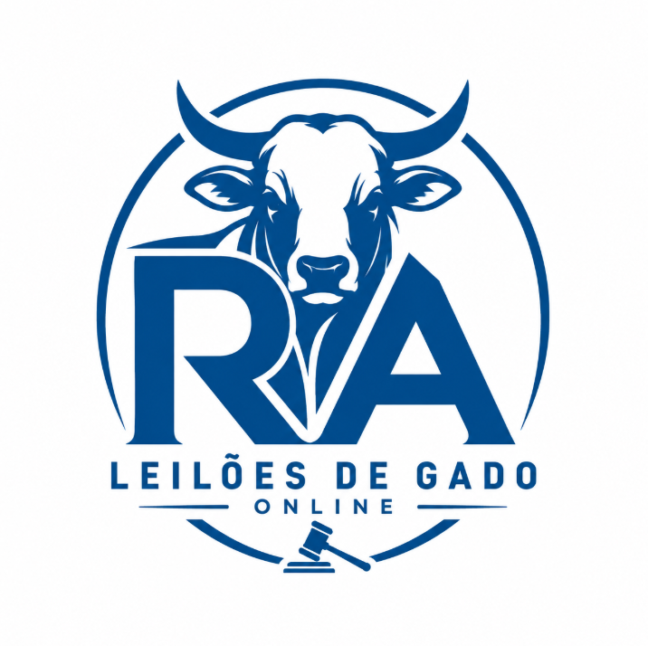

F1
FOTO EM BREVE
FUNDADOR 01
Fundador 01
Parte da criação e história da Raiz de Aço.

RAIZ DE AÇO LEILÕES • GADO • RODEIO Voltar ao site →Toda grande história começa com pessoas que acreditam em uma ideia. Conheça aqueles que fizeram parte da criação da Raiz de Aço e aqueles que deram vida à sua presença digital.
Conheça nossa equipeA Raiz de Aço nasceu da união de quatro pessoas que compartilharam uma visão e decidiram construir algo em conjunto.
Mais do que uma empresa, representa uma história construída com dedicação, parceria e valorização do agronegócio.
As quatro pessoas que deram início à história da Raiz de Aço.
Cada fundador representa uma parte importante da trajetória e da construção da empresa.
Parte da criação e história da Raiz de Aço.
Parte da criação e história da Raiz de Aço.
Parte da criação e história da Raiz de Aço.
Parte da criação e história da Raiz de Aço.
A equipe responsável por transformar a identidade da Raiz de Aço em uma experiência digital.
Desenvolvimento do projeto digital da Raiz de Aço.
Desenvolvimento do projeto digital da Raiz de Aço.
Desenvolvimento do projeto digital da Raiz de Aço.
Desenvolvimento do projeto digital da Raiz de Aço.
Nossa história continua sendo escrita a cada novo passo.
Voltar para a página inicial